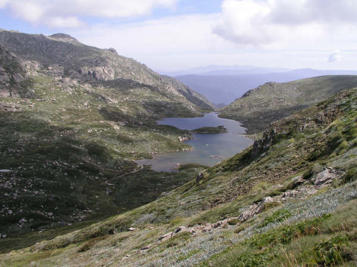
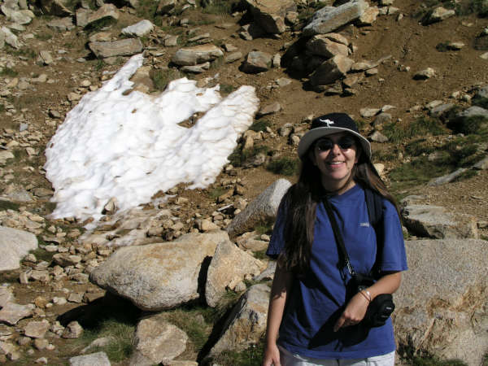
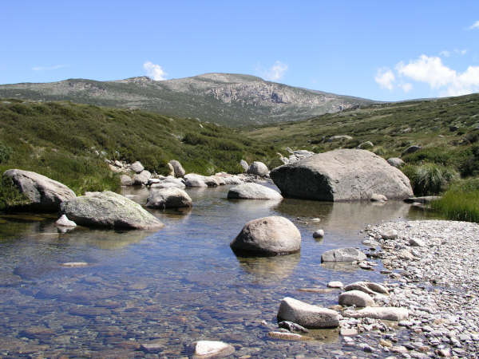
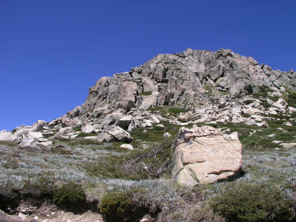
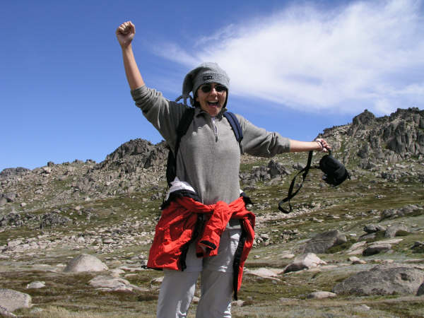
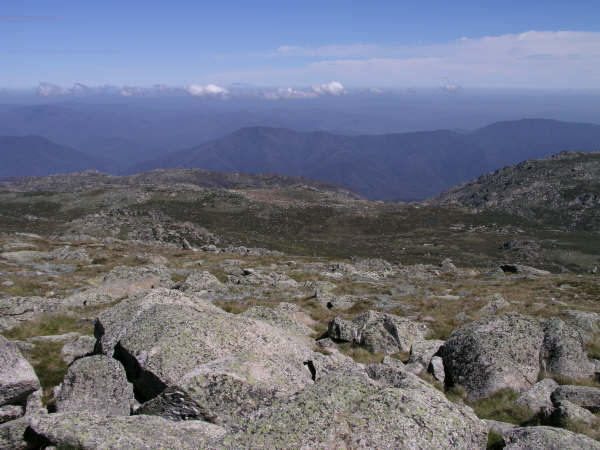
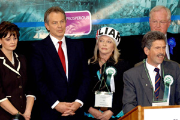

Mountains in Australia?!
Snowy Mountains, NSW, Australia
It’s been a while since our last update, must be getting lazy! But, now that the UK is in post election delight (!!) its time for a short entry on our not so recent trip to the Snowy Mountains. I must admit to taking great delight in seeing Mr Blair being delivered a very bloody nose purely for his stance on Iraq and also on seeing the attached photo the day after the election, but that's another story...
Thredbo and Perisher Blue are the two main resorts in the Snowy Mountains, about 5 hours south of Sydney and that's where we headed back in March. The Snowys are famous for skiing in the winter (which may surprise some of you on the other side of the world, as Australia and skiing don’t often go together) and less well known for hiking in the balmier months. That’s not to say that it was particularly balmy on some days we were up there! In fact, even though we went slap bang in the middle of the Summer we woke up one morning to minus temperatures! And we did see a couple of patches of snow near the top of Mount Kosciuszko (Australia’s highest peak at 2200m).
The aim of the week away was to get some fresh air, some exercise and to enjoy the outdoors in a place we’d never been. We weren’t expecting anything amazing, just a bit of a getaway. But, as always, Australia never ceases to surprise us and the Snowy Mountains was another gem. The landscape was not at all what we thought we’d ever see in Aus, although saying that I don’t know what we expect anymore, as this country is just so diverse and surprising. The scenery up there was stunning; clear blue skies, bright sunlight, rolling green hillsides and the odd mountain to boot. It just wasn’t at all what we were expecting!
We stayed at the Silvertops Lodge overlooking Lake Jindabyne and the small town below. Silvertops was another one of those great accommodation finds. On those bitterly cold evenings (of which there were only a couple) we sat in front of the roaring logfire, drinking great Aussie red and making plans for the next day. On the warm warm evenings we sat out, had a bar-b and watched the fantastic sunsets whilst a couple of kangaroos quite happily chewed away on the grass just feet away. On those evenings it was like we've so often said about other places in Aus, the place looked like someone had taken a paintbox and painted in the surroundings in the most vivid colours.
On our first day we did a short-ish walk, just to stretch the old limbs and then got up at 6am the next day to have a go at the 22km main range walk. It actually turned out to be a whole lot easier than we were expecting and quite breathtaking in parts. The first 8km were pretty easy walking, along an old road which is now only used by National Parks vehicles and was lined with the most beautiful coloured ghost gum trees. It must have been something to do with the rains the night before as the bark was striped in reds and greens and oranges – quite unlike anything I ever seen before. The walk took us over Meuller’s Pass from where we looked down upon our first Australian glacial lake, Lake Albina. The guidebook said that at this point the path becomes quite hairy, but the sight of this beautiful lake kept all thoughts of the dangers of slipping on the shale at bay.
There was only one hard bit of the walk really – the saddle between the two mountains, Lee and Caruthers. It got pretty chilly, very windy and quite bleak at this point, but Sue was chuffed to pieces anyway as when we got to the top of Caruthers at 2145m she was on her first ever summit!
It was mostly downhill from here and then, what the guidebook described as “the short but gruelling homeward climb.” We were both hoping that this description was as bad as his ‘hairy’ walk over the saddle, but it was 101% correct. It got really hot at this point, there was absolutely no shade and, my, it was steep. So, by the time we reached our car at the top we were both sweating wrecks!!
After a day’s rest we decided we were ready for the summit of Mount Kosciuszko. We took the relaxing chairlift to the start of the walk and then almost got blown off our feet by icy cold winds. We were so pleased of our hats and warm windcheaters!
Even though Mount Kosciuszko isn’t the most inspiring peak in the world nor can it claim to provide much of a challenge, the views from the summit are stunning and we both felt great to have got up there. We were also most amused to read the information board at the top telling us that the mountain has been named back in 1830 by Polish explorer Pawed Strzelecki in honour of the Polish and American hero Tadeusz Kosciuszko. But, due to a cartographer’s oversight, it was known as Mount Kosciusko until 1997 when the mistake was rectified!
When we had 'summitted' we headed back off-piste towards the top of the chairlift, guided by ski posts and a sketchy explanation in the guidebook . It was only about 2km into our boggy walk that we read the comments at the bottom of the page, "This extension to the walk should not be attempted without a compass." Still, we didn't get too lost and ended the day sipping peach schnapps in the 'Eagles Nest' at the top of the skilift.
Thredbo and Perisher Blue are the two main resorts in the Snowy Mountains, about 5 hours south of Sydney and that's where we headed back in March. The Snowys are famous for skiing in the winter (which may surprise some of you on the other side of the world, as Australia and skiing don’t often go together) and less well known for hiking in the balmier months. That’s not to say that it was particularly balmy on some days we were up there! In fact, even though we went slap bang in the middle of the Summer we woke up one morning to minus temperatures! And we did see a couple of patches of snow near the top of Mount Kosciuszko (Australia’s highest peak at 2200m).
The aim of the week away was to get some fresh air, some exercise and to enjoy the outdoors in a place we’d never been. We weren’t expecting anything amazing, just a bit of a getaway. But, as always, Australia never ceases to surprise us and the Snowy Mountains was another gem. The landscape was not at all what we thought we’d ever see in Aus, although saying that I don’t know what we expect anymore, as this country is just so diverse and surprising. The scenery up there was stunning; clear blue skies, bright sunlight, rolling green hillsides and the odd mountain to boot. It just wasn’t at all what we were expecting!
We stayed at the Silvertops Lodge overlooking Lake Jindabyne and the small town below. Silvertops was another one of those great accommodation finds. On those bitterly cold evenings (of which there were only a couple) we sat in front of the roaring logfire, drinking great Aussie red and making plans for the next day. On the warm warm evenings we sat out, had a bar-b and watched the fantastic sunsets whilst a couple of kangaroos quite happily chewed away on the grass just feet away. On those evenings it was like we've so often said about other places in Aus, the place looked like someone had taken a paintbox and painted in the surroundings in the most vivid colours.
On our first day we did a short-ish walk, just to stretch the old limbs and then got up at 6am the next day to have a go at the 22km main range walk. It actually turned out to be a whole lot easier than we were expecting and quite breathtaking in parts. The first 8km were pretty easy walking, along an old road which is now only used by National Parks vehicles and was lined with the most beautiful coloured ghost gum trees. It must have been something to do with the rains the night before as the bark was striped in reds and greens and oranges – quite unlike anything I ever seen before. The walk took us over Meuller’s Pass from where we looked down upon our first Australian glacial lake, Lake Albina. The guidebook said that at this point the path becomes quite hairy, but the sight of this beautiful lake kept all thoughts of the dangers of slipping on the shale at bay.
There was only one hard bit of the walk really – the saddle between the two mountains, Lee and Caruthers. It got pretty chilly, very windy and quite bleak at this point, but Sue was chuffed to pieces anyway as when we got to the top of Caruthers at 2145m she was on her first ever summit!
It was mostly downhill from here and then, what the guidebook described as “the short but gruelling homeward climb.” We were both hoping that this description was as bad as his ‘hairy’ walk over the saddle, but it was 101% correct. It got really hot at this point, there was absolutely no shade and, my, it was steep. So, by the time we reached our car at the top we were both sweating wrecks!!
After a day’s rest we decided we were ready for the summit of Mount Kosciuszko. We took the relaxing chairlift to the start of the walk and then almost got blown off our feet by icy cold winds. We were so pleased of our hats and warm windcheaters!
Even though Mount Kosciuszko isn’t the most inspiring peak in the world nor can it claim to provide much of a challenge, the views from the summit are stunning and we both felt great to have got up there. We were also most amused to read the information board at the top telling us that the mountain has been named back in 1830 by Polish explorer Pawed Strzelecki in honour of the Polish and American hero Tadeusz Kosciuszko. But, due to a cartographer’s oversight, it was known as Mount Kosciusko until 1997 when the mistake was rectified!
When we had 'summitted' we headed back off-piste towards the top of the chairlift, guided by ski posts and a sketchy explanation in the guidebook . It was only about 2km into our boggy walk that we read the comments at the bottom of the page, "This extension to the walk should not be attempted without a compass." Still, we didn't get too lost and ended the day sipping peach schnapps in the 'Eagles Nest' at the top of the skilift.

Snowy Mountains Panorama

Main Range Walk - Lake Albina

Main Range Walk - Seaman's Hut

Snow at the Snowys!

Sunset at Silvertops

Summit Trail - "just follow the ski poles\

Some more views from our walk

Summit trail

Nathan summiting!

Sue summiting!

View from summit of Mount Kosciuszko

Mr Blair and his bloody nose!